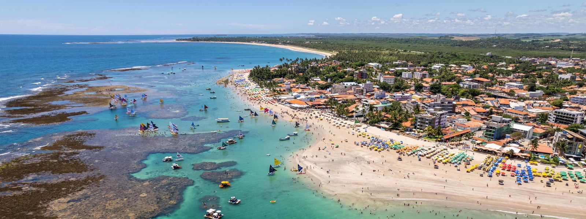

Pernambuco, localizado na região Nordeste do Brasil, é o sétimo estado mais populoso do país, com cerca de 9 milhões de habitantes em 2022, e possui a décima décima primeira maior economia. O PIB do estado atingiu R$ 254,9 bilhões em 2022, demonstrando um crescimento econômico, com destaque para os setores de indústria, serviços e agropecuária. O estado se destaca pela sua diversidade cultural, rica em história, com importantes centros históricos como Recife, e pelas belas praias e paisagens naturais
 Voltar